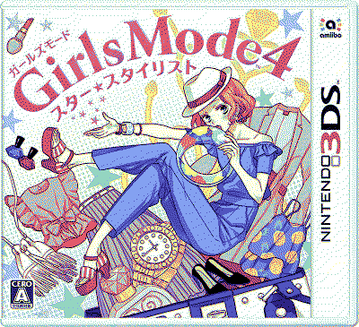

style savvy styling star
logs
24.dec.24 okay, having started fashion forward i still think this game looks a bit uglier... but this is looking to be the most interesting storyline out of all 3 games. and i do hate to admit it! but despite finding the gameplay pase a bit slow compared to the other games, styling star also probably might have the best request system too. since there is a lot of plot related request that make the game and the NPC in there a bit more alive! i'm so sorry for being so mean to you, styling star, i had to play fashion forward in order to really see your beauty.
29.nov.24 i've been still playing this game every once in a while but there is still something about it that makes me not love it as much as trendsetters despite having so many improvements in its gameplay. i have no clue why this game looks worse than trendsetters, given that game released on 2012 and this one in 2017. styling star looks very blocky, pixelated. maybe this was due to time constraints or something??? because we also have to keep in mind that this released at the very end of the 3DS' life. but i don't know man. i feel like trendsetters has a very specific aesthetic and charm to it. i guess in a way styling star feels and looks cheaper to me.
i also find it a bit hard to actually enjoy being at the shop. a HUGE improvement they provided in this entry was that you could put a customer on hold whenever they wanted something that happened to be out of stock. this is great on its own. but i think i would have really appreciated having a little memo on my phone with the client's request. because i forget! call me a 2 year old but i tell the client to wait, i get side tracked by other things, and when i finally go to the shopping center, i have completely forgotten what the customer wanted. this happens frequently and it sort of breaks that flow of the gameplay that i really like in these games.
27.oct.24 been playing this on and off and my verdict? i fear that it is just okay  like don't get me wrong, there are SOOO many improvements from trendsetters to this that i appreciate. like being able to tell a customer that you don't have exactly what they want but to wait for you while you restock. but... i don't know this game doesn't exactly click for me like trendsetters did. i'm not sure how many hows i'm into this game but hopefully in the future i can give a clearer answer as to why.
like don't get me wrong, there are SOOO many improvements from trendsetters to this that i appreciate. like being able to tell a customer that you don't have exactly what they want but to wait for you while you restock. but... i don't know this game doesn't exactly click for me like trendsetters did. i'm not sure how many hows i'm into this game but hopefully in the future i can give a clearer answer as to why.
.JPG)
.JPG)
on another note, i do think that something this game does wonderfully is having more "lively" characters. i am a bit invested in what is going on with them. and some of them are even funny!
03.sep.24 started playing this right when i finished playing trendsetters. i asked on my private twitter if i should play styling star or fashion forward next and my only oomf who has played the style savvy games voted for styling star so!!! here i am.
first thing i noticed about the game is that there is no 3D option unless my game is bugged but? i don't think that's it. and taking a look at the release date being in 2017 then yeah that makes a LOT of sense, since i know nintendo was barely pushing the 3D gimmick of the 3DS at that time. i don't think i've made it pass the tutorial of the game, but once i have a few more minutes with the game i'll come back to this to write some more of my thoughts.